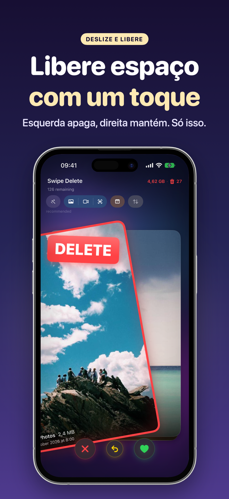
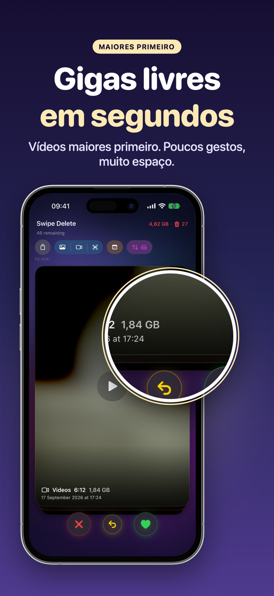
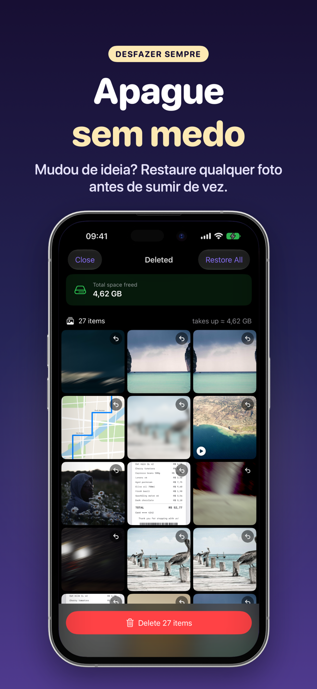
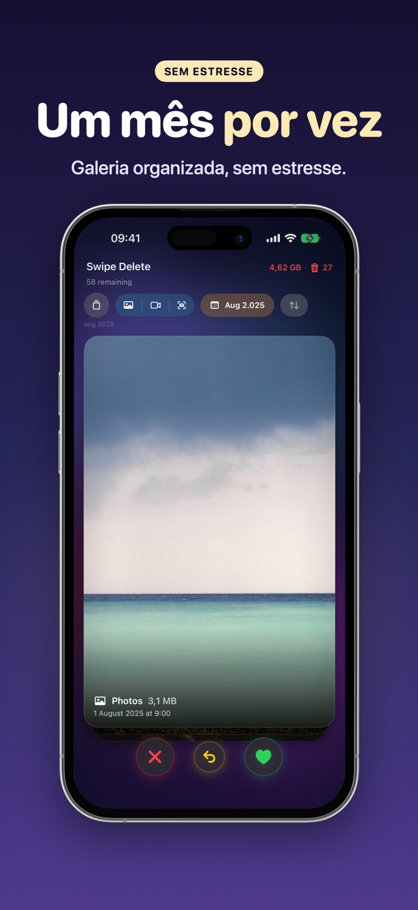
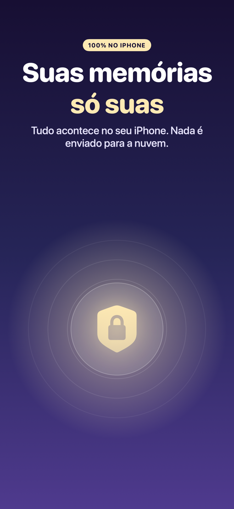
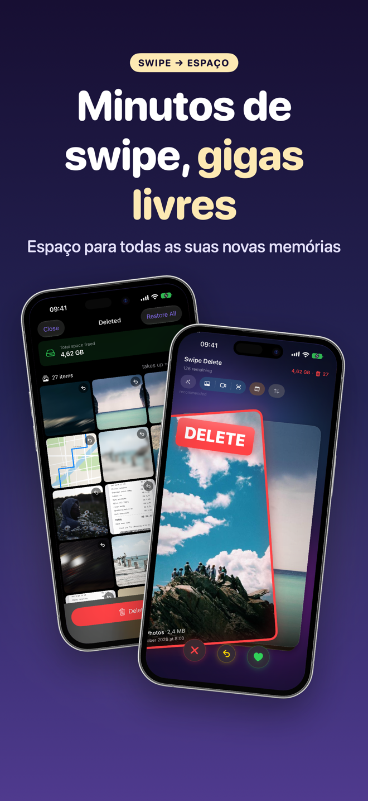

SwipeDelete · Apagar Fotos
Apague fotos com um swipe e libere espaço no iPhone
Armazenamento cheio? Limpe sua galeria em minutos, deslizando fotos e vídeos como cartas de baralho. Esquerda para apagar, direita para manter. Simples, rápido e até divertido.
Em breve naApp StoreTudo no seu iPhone · Lixeira de segurança · Compra única, sem assinatura

Seu espaço de volta, uma foto de cada vez
Recupere gigabytes sem passar horas abrindo álbum por álbum — e nada some sem a sua confirmação.
Em breve naApp Store- Sugestões inteligentesScreenshots, fotos similares, rajadas e imagens de baixa qualidade no topo.
- Os mais pesados primeiroOrdene por tamanho e libere mais espaço com menos swipes.
- Dupla proteçãoLixeira no app e confirmação final do iOS.
- Privacidade totalNada vai para a nuvem.
A limpeza do iPhone virou um joguinho
Retorno tátil a cada gesto. Deslize para ver todas as telas →
Esquerda apaga, direita mantém 
Vídeos mais pesados primeiro 
Restaure quando quiser 
Um mês de cada vez 
Tudo no aparelho 
Minutos de swipe, gigas livres Compra única
Como funciona
Quatro passos e pronto.
Permita o acesso às Fotos
Abra o SwipeDelete e autorize o acesso à fototeca. A análise fica no seu iPhone.
Escolha por onde começar
Sugestões inteligentes, filtros de fotos, vídeos ou screenshots, ano e mês, ou ordem por tamanho.
Deslize
Esquerda para apagar, direita para manter. Errou? Desfaça com um toque.
Revise e confirme
Veja a lixeira em grade, restaure o que quiser e confirme a exclusão.
Guias para liberar espaço
Guias práticos, por enquanto em inglês.
Como liberar espaço no iPhone
Guia em inglês.
Ler (EN) →Apagar fotos duplicadas
Guia em inglês.
Ler (EN) →Apagar screenshots
Guia em inglês.
Ler (EN) →Apagar fotos tremidas
Guia em inglês.
Ler (EN) →Encontrar vídeos pesados
Guia em inglês.
Ler (EN) →Limpar a galeria
Guia em inglês.
Ler (EN) →Apagar várias fotos de uma vez
Guia em inglês.
Ler (EN) →Apagar fotos em rajada
Guia em inglês.
Ler (EN) →Perguntas frequentes
Como apagar muitas fotos rápido no iPhone?
No SwipeDelete você desliza fotos e vídeos como cartas: para a esquerda para apagar, para a direita para manter. E pode desfazer a última decisão a qualquer momento. Saiba mais (EN)
Dá para recuperar uma foto apagada sem querer?
Sim. Tudo vai primeiro para uma lixeira dentro do app: restaure uma foto específica ou esvazie tudo com um toque. Depois, o iOS ainda pede uma confirmação final. Saiba mais (EN)
Como apagar fotos duplicadas e screenshots?
As sugestões inteligentes colocam no topo screenshots acumulados, fotos similares e quase duplicadas, rajadas não selecionadas e imagens de baixa qualidade. Saiba mais (EN)
Como liberar mais espaço com menos swipes?
Ordene por tamanho e comece pelos arquivos mais pesados, geralmente vídeos. Saiba mais (EN)
Minhas fotos vão para a nuvem?
Não. Tudo acontece no seu iPhone, com tecnologia da Apple; nada vai para a nuvem. Política de privacidade (EN)
O SwipeDelete é uma assinatura?
Não. Você libera até 300 MB de graça; um único pagamento desbloqueia o uso ilimitado em todos os seus dispositivos Apple. Sem mensalidade. Termos de uso (EN)
Transforme a limpeza do iPhone em um joguinho
O SwipeDelete chega em breve à App Store.
Em breve naApp Store